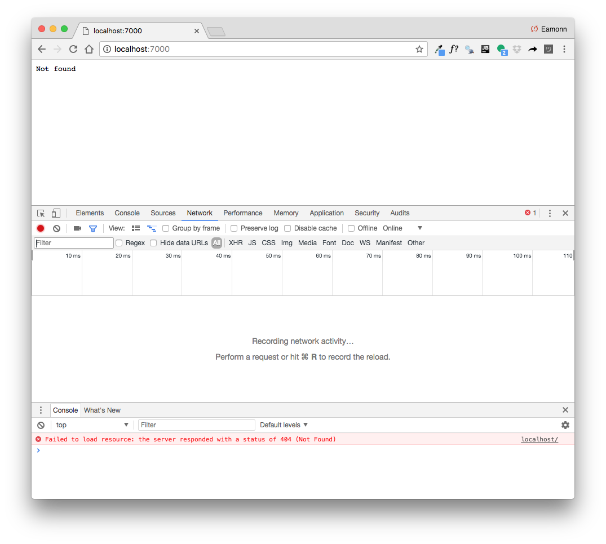
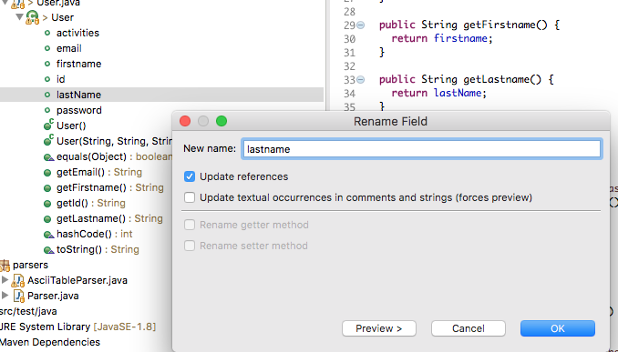
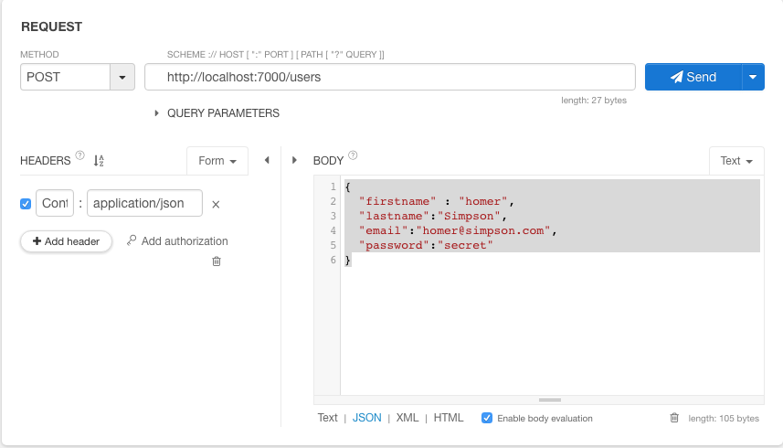
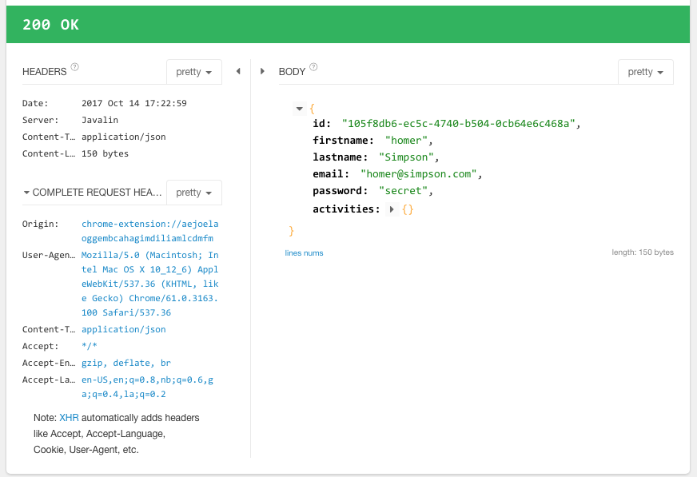
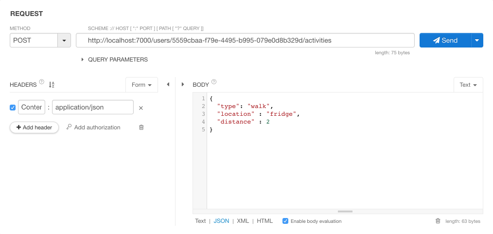

Objectives
Evolve a simple Rest service from the existing pacemaker-skeleton app using the Javalin microframework.
Solutions to Lab-08 Exercises
Exercise 1:
Implement the Add Location Command
Solution
@Command(description = "Add location: Append location to an activity")
public void addLocation(@Param(name = "activity-id") String id,
@Param(name = "longitude") double longitude,
@Param(name = "latitude") double latitude) {
Optional<Activity> activity = Optional.fromNullable(paceApi.getActivity(id));
if (activity.isPresent()) {
paceApi.addLocation(activity.get().id, latitude, longitude);
console.println("ok");
} else {
console.println("not found");
}
}Exercise 2:
Implement the List Location Command
Solution
@Command(description = "List all locations for a specific activity")
public void listActivityLocations(@Param(name = "activity-id") String id) {
Optional<Activity> activity = Optional.fromNullable(paceApi.getActivity(id));
if (activity.isPresent()) {
console.renderLocations(activity.get().route);
}
}Exercise 3:
Implement the Activity Report Commands
- (a) taking no parameters - which sorts the activities by type
We already have an API method to deliver a sorted list of activities, so we just call it:
@Command(description = "ActivityReport: List all activities for logged in user, sorted alphabetically by type")
public void activityReport() {
Optional<User> user = Optional.fromNullable(loggedInUser);
if (user.isPresent()) {
console.renderActivities(paceApi.listActivities(user.get().id, "type"));
}
}- (b) talking a single parameter - the activity type. This command only lists activities of the specified type. However, they are to be sorted by distance, longest to shortest.
@Command(
description = "Activity Report: List all activities for logged in user by type. Sorted longest to shortest distance")
public void activityReport(@Param(name = "byType: type") String type) {
Optional<User> user = Optional.fromNullable(loggedInUser);
if (user.isPresent()) {
List<Activity> reportActivities = new ArrayList<>();
Collection<Activity> usersActivities = paceApi.getActivities(user.get().id);
usersActivities.forEach(a -> {
if (a.type.equals(type))
reportActivities.add(a);
});
reportActivities.sort((a1, a2) -> {
if (a1.distance >= a2.distance)
return -1;
else
return 1;
});
console.renderActivities(reportActivities);
}
}Bellow is a script that demonstrate some simple interaction to test out these commands. In the script we keep the user and activity details to just single letters for brevity.
- A user with details 'a a a a' is created and logged in.
- Then a series of activities of types 't', are created of various distances.
- ar (without parameters) - list all activities sorted by type
- at t - this list only activities of type c, sorted by distance, longest to shortest
Welcome to pacemaker-console - ?help for instructions
pm> r a a a a
+--------------------------------------+-----------+----------+-------+
| ID | FIRSTNAME | LASTNAME | EMAIL |
+--------------------------------------+-----------+----------+-------+
| 002c7e21-cf50-44ca-a39b-c9680182cc84 | a | a | a |
+--------------------------------------+-----------+----------+-------+
ok
ok
pm> l a a
Logged in a
ok
pm> aa t t 5
+--------------------------------------+------+----------+----------+-----------+----------+
| ID | TYPE | LOCATION | DISTANCE | STARTTIME | DURATION |
+--------------------------------------+------+----------+----------+-----------+----------+
| 08520461-a88d-4918-80a5-728acf6b1ac7 | t | t | 5 | null | null |
+--------------------------------------+------+----------+----------+-----------+----------+
ok
pm> aa t t 7
+--------------------------------------+------+----------+----------+-----------+----------+
| ID | TYPE | LOCATION | DISTANCE | STARTTIME | DURATION |
+--------------------------------------+------+----------+----------+-----------+----------+
| 9aa2328a-adc5-4121-b71a-8ee7fa16d5b7 | t | t | 7 | null | null |
+--------------------------------------+------+----------+----------+-----------+----------+
ok
pm> aa t t 1
+--------------------------------------+------+----------+----------+-----------+----------+
| ID | TYPE | LOCATION | DISTANCE | STARTTIME | DURATION |
+--------------------------------------+------+----------+----------+-----------+----------+
| efa5beeb-9d16-4f34-a5c5-4e5ade656472 | t | t | 1 | null | null |
+--------------------------------------+------+----------+----------+-----------+----------+
ok
pm> ar
+--------------------------------------+------+----------+----------+-----------+----------+
| ID | TYPE | LOCATION | DISTANCE | STARTTIME | DURATION |
+--------------------------------------+------+----------+----------+-----------+----------+
| 9aa2328a-adc5-4121-b71a-8ee7fa16d5b7 | t | t | 7 | null | null |
| efa5beeb-9d16-4f34-a5c5-4e5ade656472 | t | t | 1 | null | null |
| 08520461-a88d-4918-80a5-728acf6b1ac7 | t | t | 5 | null | null |
+--------------------------------------+------+----------+----------+-----------+----------+
ok
pm> ar t
+--------------------------------------+------+----------+----------+-----------+----------+
| ID | TYPE | LOCATION | DISTANCE | STARTTIME | DURATION |
+--------------------------------------+------+----------+----------+-----------+----------+
| 9aa2328a-adc5-4121-b71a-8ee7fa16d5b7 | t | t | 7 | null | null |
| 08520461-a88d-4918-80a5-728acf6b1ac7 | t | t | 5 | null | null |
| efa5beeb-9d16-4f34-a5c5-4e5ade656472 | t | t | 1 | null | null |
+--------------------------------------+------+----------+----------+-----------+----------+
ok
pm>Javalin Depencencies
Javalin is a minial Java library for developing Java Web Services and applications:
We are going to bootstrap a simple REST service from our existing API, and implement a number of initial endpoints.
Dependencies
These are the initial dependencies to enable out skeleton app to support an rest service:
<dependency>
<groupId>io.javalin</groupId>
<artifactId>javalin</artifactId>
<version>2.4.0</version>
</dependency>
<dependency>
<groupId>org.slf4j</groupId>
<artifactId>slf4j-simple</artifactId>
<version>1.7.25</version>
</dependency>
<dependency>
<groupId>com.fasterxml.jackson.core</groupId>
<artifactId>jackson-databind</artifactId>
<version>2.9.5</version>
</dependency>Place these in your POM alongside the other dependencies. You may need to run the following command in a shell inside your project:
mvn packageThis will download the dependencies to your local maven repo. If you refresh eclipse, you should see a range of new dependencies:

Although we only included 3 entries - note that a range of upstream modules were also incorporated into our build path.
Start Rest Service
The existing main launches a simple console application.
Keeping this main as is, we can augment this with another main, this time it will start a web server :
RestMain
package controllers;
import io.javalin.Javalin;
public class RestMain {
public static void main(String[] args) throws Exception {
Javalin app = Javalin.create().start(7000);
}
}You should be able to launch this by right-clicking RestMain and selecting 'Run as->Java Application'

The console should look like this:
[main] INFO org.eclipse.jetty.util.log - Logging initialized @247ms to org.eclipse.jetty.util.log.Slf4jLog
[main] INFO io.javalin.Javalin -
_________________________________________
| _ _ _ |
| | | __ ___ ____ _| (_)_ __ |
| _ | |/ _` \ \ / / _` | | | '_ \ |
| | |_| | (_| |\ V / (_| | | | | | | |
| \___/ \__,_| \_/ \__,_|_|_|_| |_| |
|_________________________________________|
| |
| https://javalin.io/documentation |
|_________________________________________|
[main] INFO io.javalin.Javalin - Starting Javalin ...
[main] INFO org.eclipse.jetty.server.Server - jetty-9.4.12.v20180830; built: 2018-08-30T13:59:14.071Z; git: 27208684755d94a92186989f695db2d7b21ebc51; jvm 1.8.0_162-b12
[main] INFO org.eclipse.jetty.server.session - DefaultSessionIdManager workerName=node0
[main] INFO org.eclipse.jetty.server.session - No SessionScavenger set, using defaults
[main] INFO org.eclipse.jetty.server.session - node0 Scavenging every 660000ms
[main] INFO org.eclipse.jetty.server.handler.ContextHandler - Started i.j.c.u.initialize$httpHandler$1@ff5b51f{/,null,AVAILABLE}
[main] INFO org.eclipse.jetty.server.handler.ContextHandler - Started o.e.j.s.ServletContextHandler@71bbf57e{/,null,AVAILABLE}
[main] INFO org.eclipse.jetty.server.AbstractConnector - Started ServerConnector@59e5ddf{HTTP/1.1,[http/1.1]}{0.0.0.0:7000}
[main] INFO org.eclipse.jetty.server.Server - Started @697ms
[main] INFO io.javalin.Javalin - Jetty is listening on: [http://localhost:7000/]
[main] INFO io.javalin.Javalin - Javalin has started \o/If you now browse to:
Your browser should display:
Not foundYou now have a web service running on localhost - it doesnt expose any endpoints yet, so accessing it delivers a 'not found' response.
If you open Chrome developer tools - you might be able to see a little more detail:

First End Point
Introduce the folowing class into the controllers package:
PacemakerRestService
package controllers;
import io.javalin.Context;
public class PacemakerRestService {
PacemakerAPI pacemaker = new PacemakerAPI();
public void listUsers(Context ctx) {
}
}We are implementing a single endpoint to retrieve a list of users.
Attaching the end point to the server, we need to refactor RestMain as follows:
package controllers;
import io.javalin.Javalin;
public class RestMain {
public static void main(String[] args) throws Exception {
Javalin app = Javalin.create().start(7000);
PacemakerRestService service = new PacemakerRestService();
configRoutes(app, service);
}
static void configRoutes(Javalin app, PacemakerRestService service) {
app.get("/users", ctx -> {
service.listUsers(ctx);
});
}
}Examine the above carefully.
Via the Console window, Terminate the previous run of your app.
Then Restart the app and open a browser on this url:
This time the response will be blank - but if you can locate the Chrome developer console it might look like this:

This indicates the endpoint was found this time (status 200), but no value was returned.
Sample Data
We can carry over some fixtures from our previous solution:
fixtures
package models;
import java.util.ArrayList;
import java.util.Arrays;
import java.util.List;
public class Fixtures {
public static List<User> users =
new ArrayList<>(Arrays.asList(new User("marge", "simpson", "marge@simpson.com", "secret"),
new User("lisa", "simpson", "lisa@simpson.com", "secret"),
new User("bart", "simpson", "bart@simpson.com", "secret"),
new User("maggie", "simpson", "maggie@simpson.com", "secret")));
}This creates a list of test users.
We can now rework our PacemakerRestService to return this list:
package controllers;
import io.javalin.Context;
import static models.Fixtures.users;
public class PacemakerRestService {
PacemakerAPI pacemaker = new PacemakerAPI();
PacemakerRestService() {
users.forEach(
user -> pacemaker.createUser(user.firstName, user.lastName, user.email, user.password));
}
public void listUsers(Context ctx) {
ctx.json(pacemaker.getUsers());
}
}Terminate the existing app, restart it and browse to the same endpoint:
The following list should be returned:

Looking carefully as the result, we see a slight anomaly in each user returned:
{
"id":"8179fe9a-3dfa-4a9c-8835-4c044d35471d",
"firstName":"marge",
"lastName":"simpson",
"email":"marge@simpson.com",
"password":"secret",
"activities":{},
"firstname":"marge",
"lastname":"simpson"
}.. we seem to be repeating the firstname/lastname pair. Our Json parsers cannot cope very well with camel-case attribute. We can fix this now using the Refactor->rename facility in Eclipse:

This will change the fields names, and all uses thereof in the application:
public class User implements Serializable {
public String id;
public String firstname;
public String lastname;
public String email;
public String passwordRestart, and verify that Users are returned as expected:
{
"id":"8179fe9a-3dfa-4a9c-8835-4c044d35471d",
"firstName":"marge",
"lastName":"simpson",
"email":"marge@simpson.com",
"password":"secret",
"activities":{}
}We can also test this endpoint using specialized REST tools. Locate the Restlet Client Chrome extension:

and install it.
Launch the extension, and create a 'GET' request to our endpoint. Note the request is in the top of the page and the results are below the green bar. Also note that you must have your REST server running to execute these endpoints.

Explore this tool for a few minutes - including the history and repository sections.
Creating a User
To support the create user endpoint, we need a new method in our Service class:
PacemakerRestService
...
public void createUser(Context ctx) {
User user = ctx.bodyAsClass(User.class);
User newUser = pacemaker
.createUser(user.firstname, user.lastname, user.email, user.password);
ctx.json(newUser);
}
...... and a new Route:
RestMain
...
app.post("/users", ctx -> {
service.createUser(ctx);
});
...We can configure Restlet (our chrome extension) to send a POST request instead of GET

You will need to manually enter the user json. Copy/paste from here:
{
"firstname" : "homer",
"lastname":"Simpson",
"email":"homer@simpson.com",
"password":"secret"
}If the request succeeds, then you should see this result:

Retrieving a single user
We would also like to return an individual user, not the complete list of users. To do this we would formulate a url containing the id of the user e.g.:
Here is a new route - added below the other routes in the configRoutes method:
app.get("/users/:id", ctx -> {
service.listUser(ctx);
});Then add a new method in the PacemakerRestService to support the route:
public void listUser(Context ctx) {
String id = ctx.pathParam("id");
ctx.json(pacemaker.getUser(id));
}Restart the app now and test out this route. You will need to first retrieve all users (to get the IDs), and then you can request a specific user, using one of the user IDs just retrieved.
Activities
Now that users are supported - we can implement initial activity support.
First 2 new routes:
app.get("/users/:id/activities", ctx -> {
service.getActivities(ctx);
});
app.post("/users/:id/activities", ctx -> {
service.createActivity(ctx);
});This will get all activities for a given user, and also create single activity for a user. This is the implementation of these routes:
public void getActivities(Context ctx) {
String id = ctx.pathParam("id");
User user = pacemaker.getUser(id);
if (user != null) {
ctx.json(user.activities.values());
} else {
ctx.status(404);
}
}
public void createActivity(Context ctx) {
String id = ctx.pathParam("id");
User user = pacemaker.getUser(id);
if (user != null) {
Activity activity = ctx.bodyAsClass(Activity.class);
Activity newActivity = pacemaker
.createActivity(id, activity.type, activity.location, activity.distance);
ctx.json(newActivity);
} else {
ctx.status(404);
}
}In each case, we interrogate the context for the user id - and we use this id to discover which user the activities are associated with. Our API is then accessed - and we return the list of all activities, or the individual activity just created.
Testing these routes requires REST tools - we have already installed Restlet in Chrome.
First, retrieve all users:

Using the first id - formulate a POST request. Copy the json object for the new activity:
{
"type": "walk",
"location" : "fridge",
"distance" : 2
}
Press send - and we should expect a successful response (you may have to scroll down to see the response):

Finally, test the get all activities route:

Which returns the activity just created - in a list.
Exercises
Solution
The project so far:
Exercises 1
Restlet Client has a feature whereby requests can be saved for reuse later:

Experiment with creating additional activities and listing all activities, using this feature.
Exercise 2
Examine the following route:
app.get("/users/:id/activities/:activityid", ctx -> {
service.getActivity(ctx);
});This retrieves a single activity by id. Implement the getActivity() method in PacemkerRestService.
Test this route using the Restlet Client.
Exercise 3
Two final routes:
app.get("/users/:id/activities/:activityid/locations", ctx -> {
service.getActivityLocations(ctx);
});
app.post("/users/:id/activities/:activityid/locations", ctx -> {
service.addLocation(ctx);
});See if you can implement them?